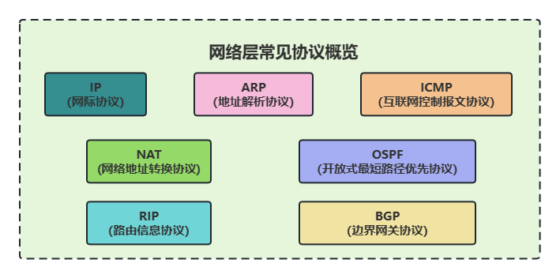
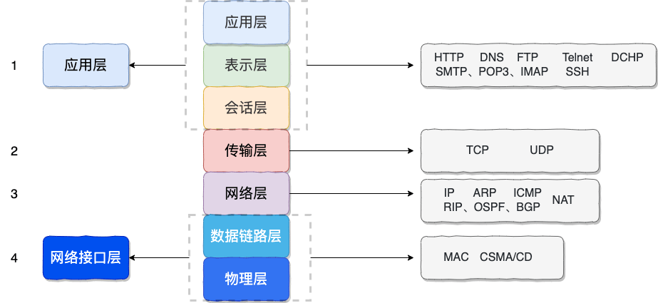
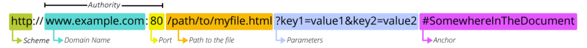

第二章 网络分层的概念
第二章 OSI 和 TCP/IP 网络分层模型详解
2.1 网络分层
复杂的系统需要分层来考虑和解决，因为每一层都需要专注于一类事情。网络分层的原因也是一样，每一层只专注于做一类事情。
- 各层之间相互独立：各层之间相互独立，各层之间不需要关心其他层是如何实现的，只需要知道自己如何调用下层提供好的功能就可以了（可以简单理解为接口调用）。这样不同厂商可以专注于解决不同的事情，甚至不同厂商提供的设备，只要提供相同的接口就可以互相操作；
- 提高了整体灵活性：每一层都可以使用最适合的技术来实现，你只需要保证你提供的功能以及暴露的接口的规则没有改变就行了；
- 大问题化小：分层可以将复杂的网络问题分解为许多比较小的、界线比较清晰简单的小问题来处理和解决。这样使得复杂的计算机网络系统变得易于设计，实现和标准化。需要注意有的时候，一台设备会处理多层的问题；
2.2 OSI 七层模型
OSI七层模型是国际标准化组织（ISO）提出一个网络分层模型，该模型由ISO这个国际化组织所主导。其大体结构以及每一层提供的功能如下图所示：

每一层都专注做一件事情，并且每一层都需要使用下一层提供的功能。比如传输层需要使用网络层提供的路由和寻址功能，这样传输层才知道把数据传输到哪里去。上面这种图可能比较抽象，再来一个比较生动的图片。

OSI 的七层体系结构概念清楚，理论也很完整，但是它比较复杂而且不实用，而且有些功能在多个层中重复出现。OSI 七层模型当时一直被一些大公司甚至一些国家政府支持，这样的背景下，实际上却并没有成为最后的实现样本，而是被另外一个协议簇TCP/IP所替代。
2.3 TCP/IP模型
TCP/IP 四层模型是目前被广泛采用的一种模型，我们可以将 TCP / IP 模型看作是 OSI 七层模型的精简版本，由以下 4 层组成：
- 应用层
- 传输层
- 网络层
- 网络接口层

需要注意的是，我们并不能将 TCP/IP 四层模型 和 OSI 七层模型完全精确地匹配起来，不过可以简单将两者对应起来，如下图所示：

2.3.1 应用层（Application layer）
应用层位于传输层之上，主要提供两个终端设备上的应用程序之间信息交换的服务，它定义了信息交换的格式，消息会交给下一层传输层来传输。 我们把应用层交互的数据单元称为报文（message/data）。
应用层协议定义了网络通信规则，对于不同的网络应用需要不同的应用层协议。在互联网中应用层协议很多，比如支持 Web 应用的 HTTP 协议，支持电子邮件的 SMTP 协议等等。应用层常见协议如下图所示：

- HTTP (Hypertext Transfer Protocol，超文本传输协议)：基于 TCP 协议，是一种用于传输超文本和多媒体内容的协议，主要是为 Web 浏览器与 Web 服务器之间的通信而设计的。当我们使用浏览器浏览网页的时候，我们网页就是通过 HTTP 请求进行加载的；
- SMTP (Simple Mail Transfer Protocol，简单邮件发送协议) ：基于 TCP 协议，是一种用于发送电子邮件的协议。⚠️注意 ：SMTP 协议只负责邮件的发送，而不是接收。要从邮件服务器接收邮件，需要使用 POP3 或 IMAP 协议；
- POP3/IMAP (邮件接收协议)：基于 TCP 协议，两者都是负责邮件接收的协议。IMAP 协议是比 POP3 更加新的协议，它在功能和性能上都更加强大。IMAP 支持邮件搜索、标记、分类、归档等高级功能，而且可以在多个设备之间同步邮件状态。几乎所有现代电子邮件客户端和服务器都支持 IMAP；
- FTP (File Transfer Protocol，文件传输协议协议)：基于 TCP 协议，是一种用于在计算机之间传输文件的协议，可以屏蔽操作系统和文件存储方式。⚠️注意 ：FTP 是一种不安全的协议，因为它在传输过程中不会对数据进行加密。建议在传输敏感数据时使用更安全的协议，如 SFTP；
- Telnet (远程登陆协议)：基于 TCP 协议，用于通过一个终端登陆到其他服务器。Telnet 协议的最大缺点之一是所有数据（包括用户名和密码）均以明文形式发送，这有潜在的安全风险。这就是为什么如今很少使用 Telnet，而是使用一种称为 SSH 的非常安全的网络传输协议的主要原因；
- SSH (Secure Shell Protocol，安全的网络传输协议)：基于 TCP 协议，通过加密和认证机制实现安全的访问和文件传输等业务；
- RTP (Real-time Transport Protocol，实时传输协议}：通常基于 UDP 协议，但也支持 TCP 协议。它提供了端到端的实时传输数据的功能，但不包含资源预留存、不保证实时传输质量，这些功能由 WebRTC 实现；
- DNS (Domain Name System，域名管理系统}: 基于 UDP 协议，用于解决域名和 IP 地址的映射问题；
2.3.2 传输层（Transport layer）
传输层的主要任务就是负责向两台终端设备进程之间的通信提供通用的数据传输服务。 应用进程利用该服务传送应用层报文。“通用的”是指并不针对某一个特定的网络应用，而是多种应用可以使用同一个运输层服务。传输层常见协议：

- TCP (Transmission Control Protocol，传输控制协议 )：提供面向连接的，可靠的数据传输服务；
- UDP (User Datagram Protocol，用户数据协议)：提供无连接的，尽最大努力的数据传输服务（不保证数据传输的可靠性），简单高效；
面向连接与无连接的含义
面向连接意味着在使用 TCP 协议进行数据传输之前，通信的双方（例如，客户端和服务器）必须先建立一个虚拟的连接。这个连接的建立过程通常被称为“三次握手”。建立连接的目的是为了在双方之间协商一些参数，并维护这个连接的状态信息，以便：
- 保证数据的可靠传输： TCP 会对每个发送的数据包进行编号，接收方会对收到的数据包进行确认。如果发送方在一定时间内没有收到确认，就会重新发送丢失的数据包，从而保证数据不会丢失；
- 保证数据的顺序性： 数据包在网络中传输时可能会乱序到达。TCP 会根据数据包的编号将它们重新按顺序组装起来，确保接收方接收到的数据是完整且有序的；
- 提供流量控制： TCP 能够根据接收方的处理能力和网络拥塞情况，动态地调整发送方的发送速率，防止数据发送过快导致接收方 overwhelmed 或网络拥堵；
你可以将 TCP 的面向连接类比于打电话。在通话之前，你需要先拨号建立连接，对方接听后，双方才能开始交流。通话过程中，双方都知道对方的存在，并且可以确保说的话能够被对方听到（可靠性）。
无连接意味着在使用 UDP 协议进行数据传输之前，通信的双方不需要建立任何预先的连接。发送方可以直接将数据封装成数据报（datagram），然后发送出去，而无需告知接收方，也无需等待接收方的确认。由于 UDP 是无连接的，它具有以下特点：
- 不可靠传输： UDP 不保证数据包一定能够到达接收方，也不保证数据包的顺序。数据包在传输过程中可能会丢失、重复或乱序到达；
- 开销小，速度快： 由于省去了建立连接和维护连接状态的开销，以及数据包的确认和重传机制，UDP 的传输效率通常比 TCP 更高，延迟更小；
你可以将 UDP 的无连接类比于寄信。你只需要知道对方的地址，就可以直接将信件寄出去，而无需事先与对方打招呼或确认对方是否准备好接收。你无法保证信件一定会被送达，也无法保证送达的顺序。
总结来说：
- TCP 面向连接，可靠： 像打电话一样，先建立连接，再传输数据，保证数据的可靠性和顺序性。适用于对数据完整性要求高的场景，如网页浏览（HTTP）、文件传输（FTP）、电子邮件（SMTP）等；
- UDP 无连接，快速： 像寄信一样，直接发送数据，不建立连接，传输速度快，但可能丢包或乱序。适用于对实时性要求高，但可以容忍一定程度的数据丢失的场景，如在线视频、语音通话（VoIP）、在线游戏、DNS 查询等；
2.3.3 网络层（Network Layer）
网络层负责为分组交换网上的不同主机提供通信服务。 在发送数据时，网络层把运输层产生的报文段或用户数据报封装成分组和包进行传送。在 TCP/IP 体系结构中，由于网络层使用 IP 协议，因此分组也叫 IP 数据报，简称数据报。
⚠️ 注意：不要把运输层的“用户数据报 UDP”和网络层的“IP 数据报”弄混。
网络层的还有一个任务就是选择合适的路由，使源主机运输层所传下来的分组，能通过网络层中的路由器找到目的主机。
这里强调指出，网络层中的“网络”二字已经不是我们通常谈到的具体网络，而是指计算机网络体系结构模型中第三层的名称。互联网是由大量的异构（heterogeneous）网络通过路由器（router）相互连接起来的。互联网使用的网络层协议是无连接的网际协议（Internet Protocol）和许多路由选择协议，因此互联网的网络层也叫做 网际层 或 IP 层。
网络层常见协议：

- IP (Internet Protocol，网际协议)：TCP/IP 协议中最重要的协议之一，主要作用是定义数据包的格式、对数据包进行路由和寻址，以便它们可以跨网络传播并到达正确的目的地。目前 IP 协议主要分为两种，一种是过去的 IPv4，另一种是较新的 IPv6；
- ARP (Address Resolution Protocol，地址解析协议)：ARP 协议解决的是网络层地址和链路层地址之间的转换问题。因为一个 IP 数据报在物理上传输的过程中，总是需要知道下一跳（物理上的下一个目的地）该去往何处，但 IP 地址属于逻辑地址，而 MAC 地址才是物理地址，ARP 协议解决了 IP 地址转 MAC 地址的一些问题；
- ICMP (Internet Control Message Protocol，互联网控制报文协议)：一种用于传输网络状态和错误消息的协议，常用于网络诊断和故障排除。例如，Ping 工具就使用了 ICMP 协议来测试网络连通性；
- NAT (Network Address Translation，网络地址转换协议)：NAT 协议的应用场景如同它的名称——网络地址转换，应用于内部网到外部网的地址转换过程中。具体地说，在一个小的子网（局域网，LAN）内，各主机使用的是同一个 LAN 下的 IP 地址，但在该 LAN 以外，在广域网（WAN）中，需要一个统一的 IP 地址来标识该 LAN 在整个 Internet 上的位置；
- OSPF (Open Shortest Path First，开放式最短路径优先) ：一种内部网关协议 （Interior Gateway Protocol, IGP），也是广泛使用的一种动态路由协议，基于链路状态算法，考虑了链路的带宽、延迟等因素来选择最佳路径。
- RIP (Routing Information Protocol，路由信息协议)：一种内部网关协议（Interior Gateway Protocol, IGP），也是一种动态路由协议，基于距离向量算法，使用固定的跳数作为度量标准，选择跳数最少的路径作为最佳路径。
- BGP (Border Gateway Protocol，边界网关协议)：一种用来在路由选择域之间交换网络层可达性信息（Network Layer Reachability Information，NLRI）的路由选择协议，具有高度的灵活性和可扩展性；
2.3.4 网络接口层（Network Interface Layer）
我们可以把网络接口层看作是 OSI 模型中数据链路层和物理层的合体。
- 数据链路层(data link layer)通常简称为链路层（ 两台主机之间的数据传输，总是在一段一段的链路上传送的）。**数据链路层的作用是将网络层交下来的 IP 数据报组装成帧，在两个相邻节点间的链路上传送帧。每一帧包括数据和必要的控制信息（如同步信息，地址信息，差错控制等）；
- 物理层的作用是实现相邻计算机节点之间比特流的透明传送，尽可能屏蔽掉具体传输介质和物理设备的差异**
网络接口层重要功能和协议如下图所示：
2.3.5 TCP/IP 模型和 OSI 模型的对应关系
以下是一个 OSI 模型和 TCP/IP 模型初略的对应关系。

2.4 常见网络应用与协议
2.4.1 访问网页
的来说，网络通信模型可以用下图来表示，也就是大家只要熟记网络结构五层模型，按照这个体系，很多知识点都能顺出来了。访问网页的过程也是如此。
开始之前，我们先简单过一遍完整流程：
- 在浏览器中输入指定网页的 URL。
- 浏览器通过 DNS 协议，获取域名对应的 IP 地址。
- 浏览器根据 IP 地址和端口号，向目标服务器发起一个 TCP 连接请求。
- 浏览器在 TCP 连接上，向服务器发送一个 HTTP 请求报文，请求获取网页的内容。
- 服务器收到 HTTP 请求报文后，处理请求，并返回 HTTP 响应报文给浏览器。
- 浏览器收到 HTTP 响应报文后，解析响应体中的 HTML 代码，渲染网页的结构和样式，同时根据 HTML 中的其他资源的 URL（如图片、CSS、JS 等），再次发起 HTTP 请求，获取这些资源的内容，直到网页完全加载显示。
- 浏览器在不需要和服务器通信时，可以主动关闭 TCP 连接，或者等待服务器的关闭请求。
一切的开始——打开浏览器，在地址栏输入 URL，回车确认。那么，什么是 URL？访问 URL 有什么用？
URL
URL（Uniform Resource Locators），即统一资源定位器。网络上的所有资源都靠 URL 来定位，每一个文件就对应着一个 URL，就像是路径地址。理论上，文件资源和 URL 一一对应。实际上也有例外，比如某些 URL 指向的文件已经被重定位到另一个位置，这样就有多个 URL 指向同一个文件。
**URL 的组成结构

- 协议。URL 的前缀通常表示了该网址采用了何种应用层协议，通常有两种——HTTP 和 HTTPS。当然也有一些不太常见的前缀头，比如文件传输时用到的
ftp:； - 域名。域名便是访问网址的通用名，这里也有可能是网址的 IP 地址，域名可以理解为 IP 地址的可读版本，毕竟绝大部分人都不会选择记住一个网址的 IP 地址；
- 端口。如果指明了访问网址的端口的话，端口会紧跟在域名后面，并用一个冒号隔开；
- 资源路径。域名（端口）后紧跟的就是资源路径，从第一个
/开始，表示从服务器上根目录开始进行索引到的文件路径，上图中要访问的文件就是服务器根目录下/path/to/myfile.html。早先的设计是该文件通常物理存储于服务器主机上，但现在随着网络技术的进步，该文件不一定会物理存储在服务器主机上，有可能存放在云上，而文件路径也有可能是虚拟的（遵循某种规则）； - 参数。参数是浏览器在向服务器提交请求时，在 URL 中附带的参数。服务器解析请求时，会提取这些参数。参数采用键值对的形式
key=value，每一个键值对使用&隔开。参数的具体含义和请求操作的具体方法有关； - 锚点。锚点顾名思义，是在要访问的页面上的一个锚。要访问的页面大部分都多于一页，如果指定了锚点，那么在客户端显示该网页是就会定位到锚点处，相当于一个小书签。值得一提的是，在 URL 中，锚点以
#开头，并且不会作为请求的一部分发送给服务端；
DNS
键入了 URL 之后，第一个重头戏登场——DNS 服务器解析。DNS (Domain Name System) 域名系统，要解决的是 域名和 IP 地址的映射问题 。毕竟，域名只是一个网址便于记住的名字，而网址真正存在的地址其实是 IP 地址。

目前 DNS 的设计采用的是分布式、层次数据库结构，DNS 是应用层协议，基于 UDP 协议之上，端口为 53 。